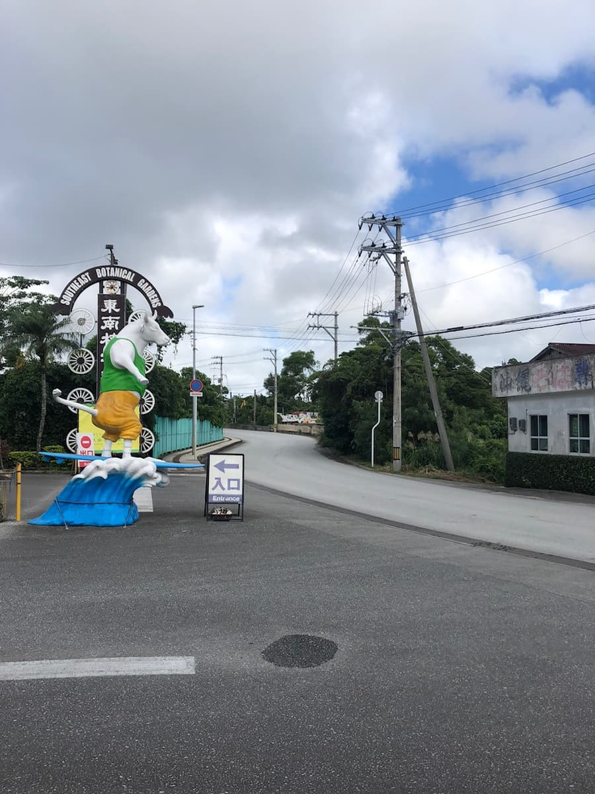
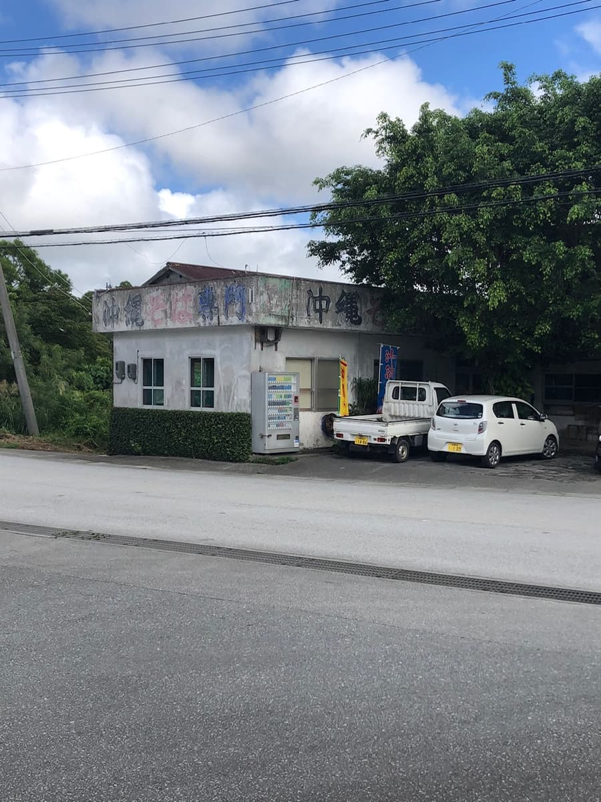
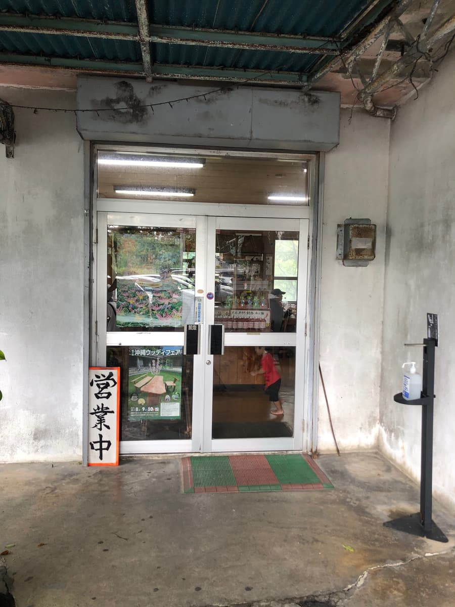
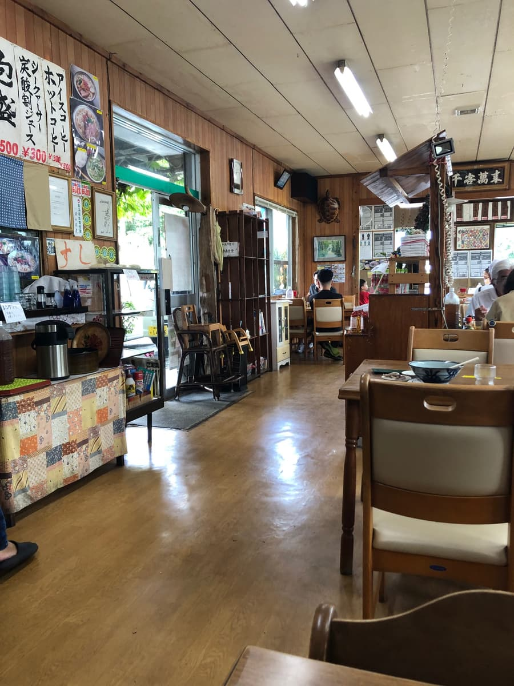
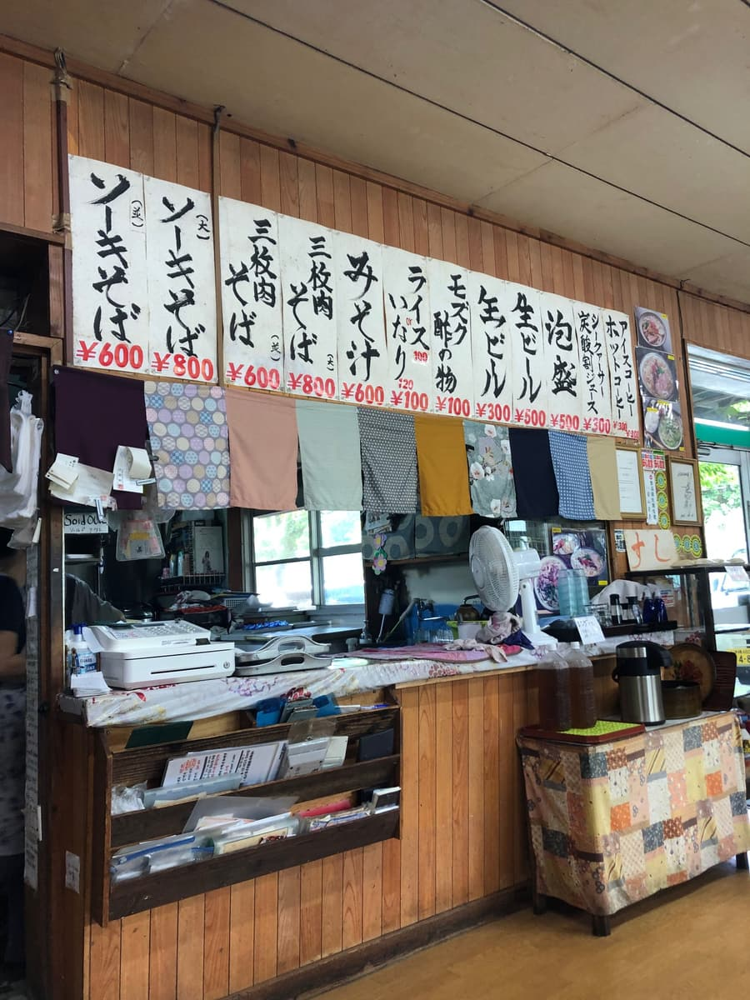
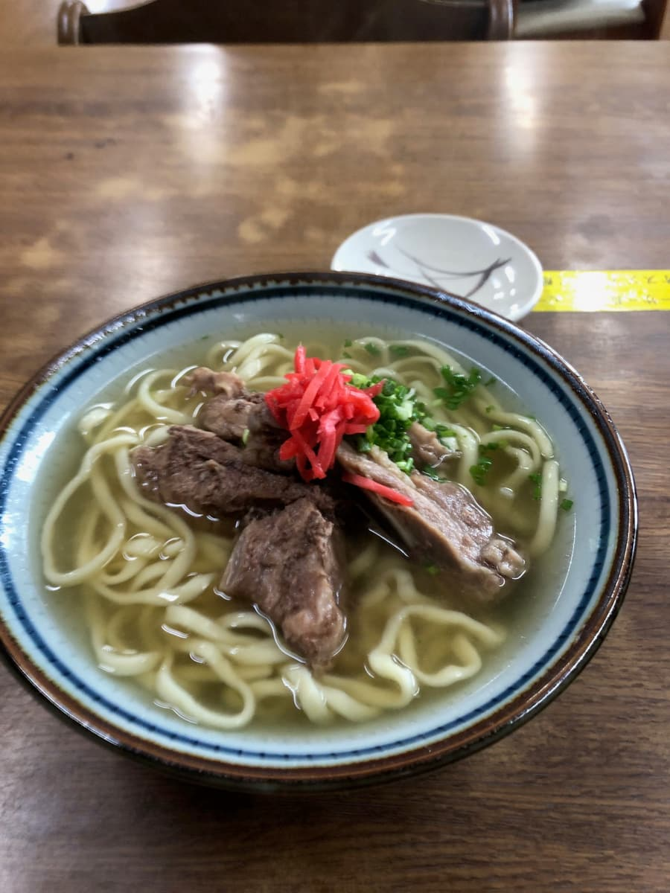
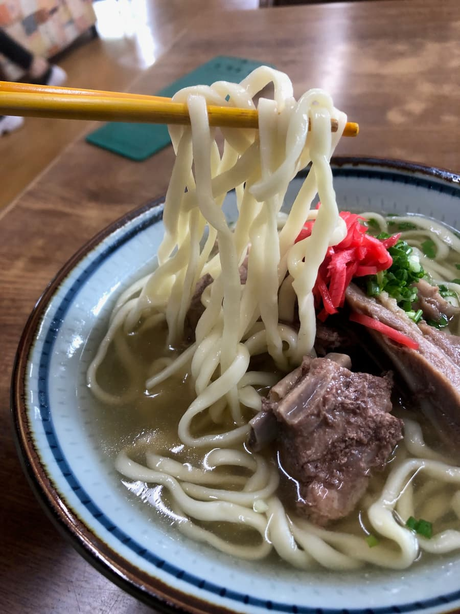

※こちらの記事は、ＡＩ（Chat gpt4o）で作成したものを一部、加筆して作成しています笑
2024.11に食べました😄 今回は沖縄市登川にある「当南食堂」さんへ行ってきました！🏮


お店の外観は年季が入っていて、地元の人たちに長く愛されてきた雰囲気が漂いますね。駐車場もあり、車で訪れるのに便利です🚗

入り口のガラス戸を開けると、広めの店内に木の温もりが感じられる空間が広がります✨ カウンター周りは雑然とした感じもあるけど、それもまた味があって良いですね。壁には手書きのメニューが並び、沖縄らしい家庭的な雰囲気が漂います。


今回はメニューの中から「ソーキそば（大）」を注文しました！🍜

しばらくして運ばれてきたそばは、見た目はシンプルで昔ながらの沖縄そばといった感じ。スープは透き通った黄金色で、鰹ベース🐟 普通な感じです。

麺は中太の緩やかな縮れ麺。柔らかめの茹で加減。個人的には、もう少しコシがある方が好きですが、これもまた昔ながらの沖縄そばらしさを感じさせます🍜 ただ、大盛りを注文したのに、他の沖縄そば屋さんと比べると麺の量が少なく感じました🤔
具材のソーキは、あっさり系の味付けで控えめ。ですが、食べてみると筋っぽさが結構あって、骨ばかりで食べられる身が少ない印象🥩 もう少しホロホロに煮込まれていると嬉しかったですね。
テーブルには「酒」と「酢」と書かれた調味料が置かれていて、試しに使ってみました🔥 これがなかなか個性的！普通のコーレーグースよりも唐辛子の辛さがガツンときて、酢の酸味も強め🌶️ スープに入れるとパンチのある味に変わるので、好みが分かれるかもしれませんが、辛いのが好きな人にはおすすめですね。
お店はお客で賑わっていて、人気の食堂であることが伺えました👪
総合的には「普通に美味しい沖縄そば」という印象。特別感は少ないですが、昔ながらの食堂の雰囲気と優しい味わいが魅力ですね🌺
評価（9点/15点）：総合的には「普通に美味しい沖縄そば」という印象ですが、お客さんに愛される沖縄食堂の雰囲気を味わいたい方にはおすすめですよ！😊
麺 ：★★★☆☆（3）
スープ：★★★☆☆（3）
具 ：★★★☆☆（3）